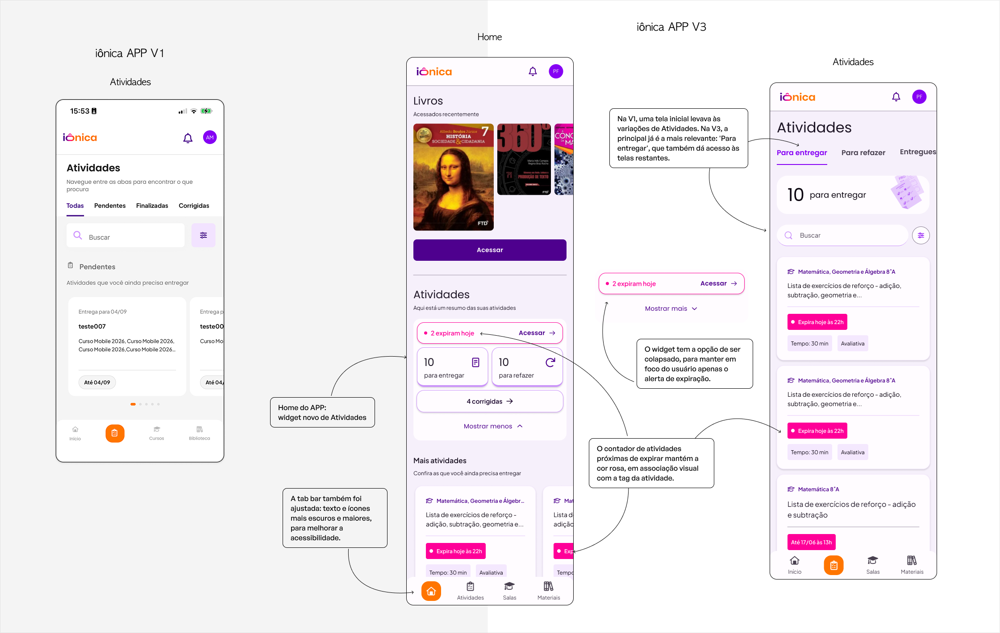
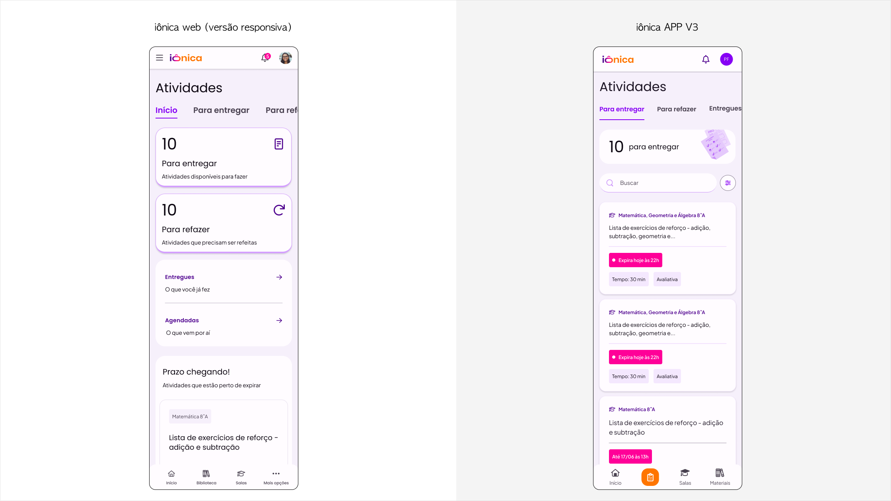
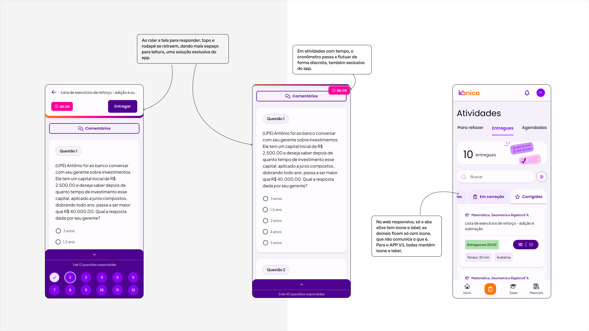
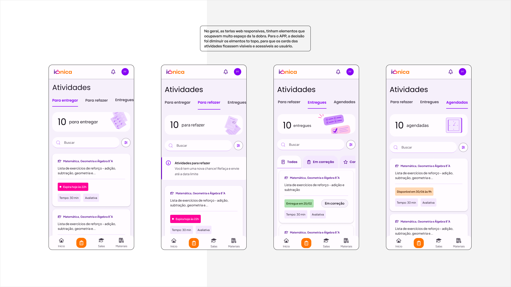
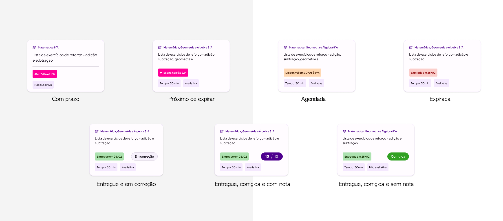
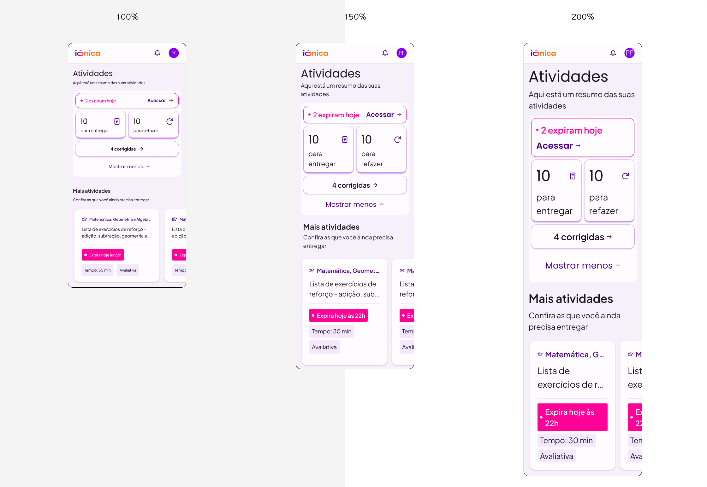
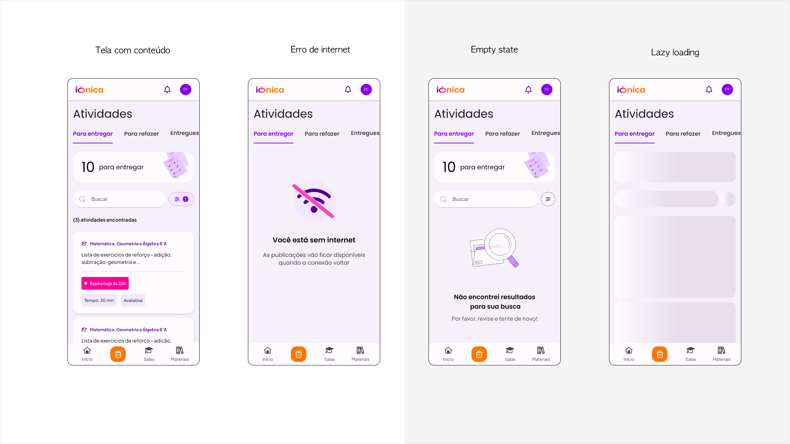
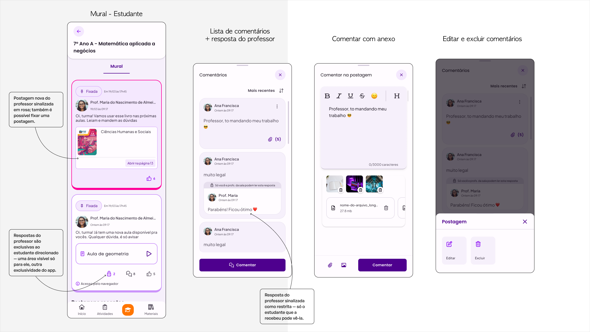
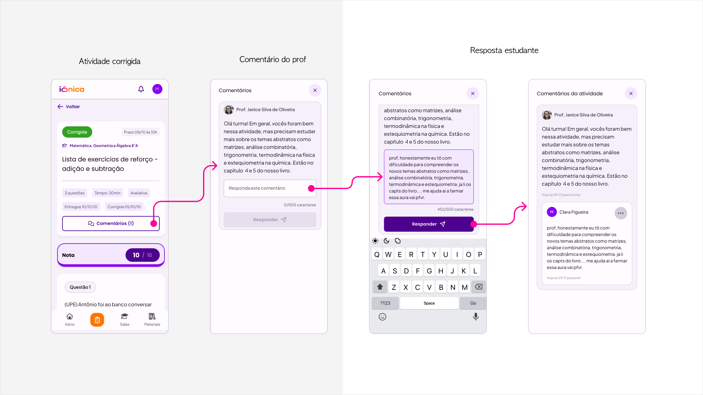
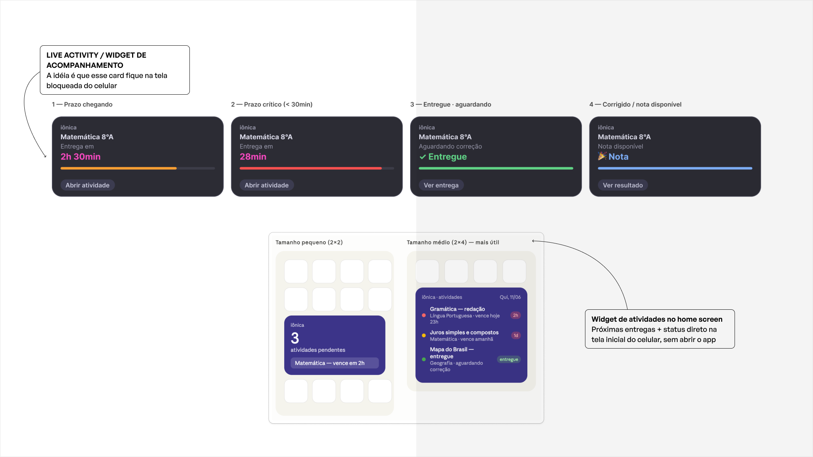

FTD Educação · Product Design
Evoluindo jornadas de Estudantes e Professores para ampliar autonomia e interação no mobile, com acessibilidade desde a concepção e menos dependência dos padrões da Web.
FTD Educação · Product Designer Sênior · APP · 2026 · Em evolução
01
A iônica é uma plataforma educacional utilizada por diferentes perfis, incluindo Estudante, Professor e Gestor, em experiências que acontecem na Web e no APP.
Na versão atual do APP, o Estudante já consegue consultar notas e realizar Atividades, mas a experiência de Atividades é mais simples.
A V3 parte dessa base para construir uma experiência mais completa: reorganiza a forma de encontrar e acompanhar atividades, trabalha diferentes estados e prazos e incorpora novas possibilidades de interação com professores.
O objetivo não é simplesmente reproduzir a Web em uma tela menor. É fazer com que a experiência seja cada vez mais pensada como APP.
O APP atual já permite consultar notas e realizar Atividades. A V3 evolui essa base para uma experiência mais completa, acessível e própria do contexto mobile.

02
A evolução da Web V3 é conduzida por outra frente. No APP, meu trabalho utiliza os fluxos da Web como referência quando necessário, mas exige uma nova leitura da experiência.
O Discovery começou pelo entendimento:
O trabalho não era “responsivizar” telas.
O que precisa mudar para que essa jornada funcione bem como uma experiência de APP?

03
Atuo como Product Designer Sênior na evolução da experiência do APP, revisando e projetando jornadas da V3 para diferentes contextos de uso.
Meu trabalho envolve compreender fluxos e regras existentes, identificar gaps na experiência mobile, reorganizar arquitetura e hierarquia quando necessário e definir navegação, interação, componentes e comportamento da interface.
A experiência é pensada para smartphones, tablets e Chromebook, considerando também modo claro, modo escuro e condições de acessibilidade como ampliação de texto em 150% e 200%.
Trabalho em parceria próxima com UX Writing durante o processo. Interface e conteúdo são discutidos conjuntamente, com uma divisão clara de responsabilidade: as decisões finais de Design são minhas; as decisões finais de microcopy são de UX Writing.
04
O Estudante já consegue realizar Atividades no APP atual. Na V3, o desafio não é criar essa capacidade do zero, mas evoluir a experiência para que o Estudante consiga compreender e acompanhar melhor todo o ciclo da atividade.
A experiência passa a considerar diferentes momentos, estados, regras, informações e prazos. O desafio não era apenas fazer tudo caber em uma tela menor. Era decidir o que precisava receber atenção primeiro.

05 · Decisão 01
Durante a estruturação da experiência, foi removida uma tela genérica de “Início” e “Para entregar” passou a ser a principal entrada em Atividades.
A arquitetura procura acompanhar o momento da jornada do Estudante em vez de simplesmente reproduzir a estrutura interna do produto. Em uma experiência mobile, reduzir uma etapa também aproxima o Estudante daquilo que exige sua atenção.

06 · Decisão 02
Prazo é uma informação crítica dentro de Atividades. Em telas pequenas, textos auxiliares e metadados possuem menor presença visual e podem passar despercebidos durante uma leitura rápida.
Por isso, trabalhei a cor como parte da hierarquia da experiência. O rosa passou a funcionar como sinal visual associado às atividades ativas e que ainda exigem uma ação do Estudante.
Quando uma atividade entra em uma faixa crítica — aproximadamente 24 horas antes de expirar — a tag de prazo recebe também uma bolinha pulsante, aumentando sua saliência visual e chamando atenção para a urgência.
Além da urgência, cores também comunicam o status da atividade — agendada, em correção, entregue, corrigida ou expirada — reforçando o estado sem depender só do texto.
Cor e movimento reforçam a informação. Não substituem o significado.
A informação de prazo não depende exclusivamente da cor ou da animação.

07 · Decisão 03
Por trás de “Atividades” existem diferentes estados e momentos. Uma atividade pode estar disponível, agendada, entregue, em correção, corrigida ou precisar ser refeita. Também pode envolver prazo, nota, feedback, comentários e diferentes regras de execução.
O objetivo foi evitar que toda essa complexidade aparecesse simultaneamente. A arquitetura apresenta primeiro aquilo que representa uma intenção ou um momento reconhecível para o Estudante. Os demais estados aparecem no contexto em que se tornam relevantes.
Preservar a complexidade necessária ao produto sem transferir toda essa complexidade para quem o utiliza.
08
Acessibilidade é um dos pilares do trabalho na V3 APP. Uma experiência que funciona na Web precisa ser cuidadosamente observada quando passa para telas menores.
A ampliação afeta muito mais do que a tipografia. Títulos podem ocupar novas linhas, componentes precisam acomodar mais conteúdo, metadados ganham altura e ações precisam continuar disponíveis e compreensíveis.
Minha responsabilidade como Product Designer é definir como layout, hierarquia, componentes, espaçamentos e interações respondem a essas condições sem comprometer a realização da tarefa. As decisões relacionadas aos textos e à microcopy são discutidas conjuntamente e conduzidas por UX Writing.
O que funciona na Web não necessariamente continua acessível quando cabe em uma tela menor.
Ampliação de texto avaliada
A experiência também considera

09
A experiência também precisa funcionar quando o cenário não é o ideal. Os fluxos consideram diferentes estados da interface, como carregamento, ausência de conteúdo e erros, além dos diferentes estados das próprias atividades.
O objetivo é manter orientação e continuidade mesmo quando a experiência sai do caminho principal.

10
Enquanto Atividades evolui uma jornada já existente para o Estudante, o Mural parte de uma experiência que também já existia no APP e amplia suas possibilidades dentro das Salas.
Na V3, o Mural evolui a comunicação entre Professor e Estudante. Para o Professor, o fluxo contempla ações como criar uma postagem, responder, editar, excluir e acompanhar interações dentro de uma Sala. Para o Estudante, o Mural amplia as possibilidades de interação com o Professor dentro do contexto escolar.
Essa frente também considera diferentes tipos de conteúdo, respostas e estados como carregamento, vazio e erro.

11
A interação também acontece dentro da própria jornada de Atividades. Comentários precisam coexistir com o conteúdo que o Estudante está realizando sem transformar a conversa em uma experiência completamente desconectada da tarefa.
A solução considera os comentários como parte do contexto da Atividade, permitindo consultar a conversa e participar dela mantendo a relação com aquilo que está sendo realizado. As decisões de interação e comportamento da interface pertencem ao trabalho de Design; as decisões finais de microcopy pertencem a UX Writing.

12
À medida que a iônica ganha novas capacidades no APP, também surgem oportunidades de explorar recursos próprios do dispositivo, em vez de reproduzir padrões originados na Web.
Uma das ideias em exploração é utilizar Live Activities para ajudar o Estudante a acompanhar atividades com prazo. A mesma necessidade que hoje orienta a sinalização de urgência dentro da interface poderia, futuramente, acompanhar o Estudante no contexto do próprio dispositivo e ajudá-lo a perceber que uma atividade está próxima de expirar.
Hoje
Prazo e urgência são sinalizados dentro da iônica.
Visão futura
Explorar recursos do dispositivo para acompanhar atividades com prazo também fora da tela principal do APP.

13
A V3 APP ainda está em evolução. O trabalho avança em experiências como Atividades para Estudante, comentários e evolução do Mural em Salas, enquanto outras capacidades fazem parte da direção futura do produto.
A visão é ampliar progressivamente a autonomia dos diferentes perfis e aproximar cada vez mais a experiência das características próprias de um APP. Possibilidades futuras incluem maior autonomia para Professor e Gestor, como gerenciamento de Salas e criação de Atividades.
Não se trata de buscar paridade com a Web tela por tela. Trata-se de decidir o que faz sentido levar, o que precisa ser transformado e o que pode nascer especificamente para uma experiência de APP.
O que estou levando deste trabalho
A iônica V3 reforçou para mim que espaço reduzido, acessibilidade, contexto de uso e capacidades do dispositivo não são restrições que entram depois da solução. São parte daquilo que define a solução.
Em um produto complexo e multiperfil, evoluir o APP também significa equilibrar o que já existe, o que vem de outras plataformas e aquilo que pode nascer especificamente para uma experiência mobile.